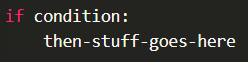
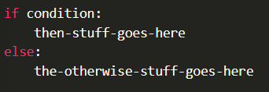
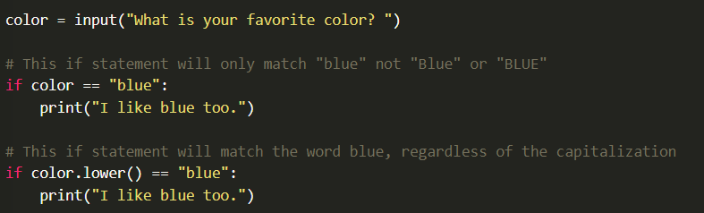

As shown in the videos above, the basic framework for "if statements", or conditional statements is as follows:
If there are things that should happen if the condition is not true, then we can list other things in the "else" clause like so:
There are a few things in the syntax that are really important. The first is colon ":", it says, there is a block of code that is coming that applies to either the "if" part or the "else" part.
The next thing that is important is the indentation of the block. It technically doesn't matter how many spaces of tabs you use, as long as it is consistent. It is very common to either use two or four spaces, but again the important thing is to be consistent.
In Visual Studio Code, by default when you press the "tab" key, it will indent your code four spaces, which is what you should use.
There are many options for the condition, but usually it has the form of "x == y" or "x > y" or something similar.
Don't forget that when you want to see if two items are equal you must use two equals symbols "==" not just one. In most programming languages. including Python, one equals sign "=" is used to assign a value to a variable, whereas two equal signs "==" are used to check if two variables are equal.
When comparing two things, remember that case matters (upper case versus lower case). Because of this, it is common to convert strings that come from the user to lowercase before comparing them against a value you expect.
